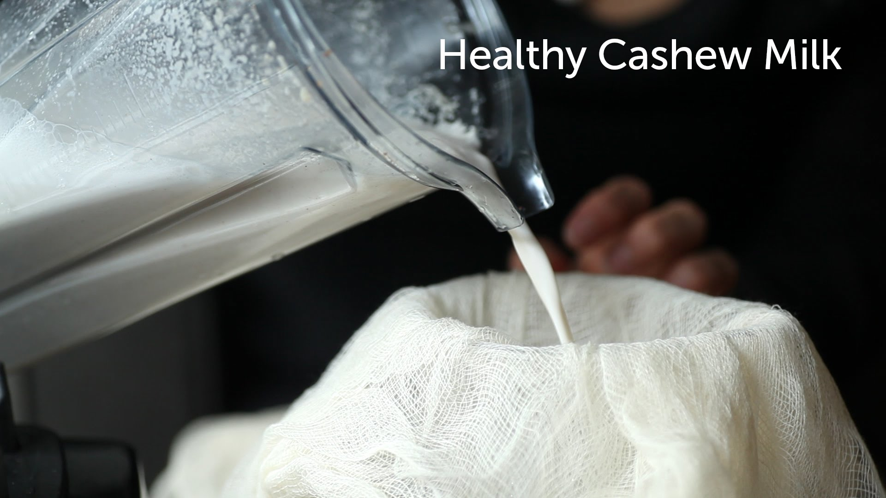

Plant-based Milks (in alphabetical order):
- almond milk
- cashew milk
- oat milk
- soy milk

Mammary Milks (in alphabetical order):
- cow milk
- goat milk
- human breast milk
- pig milk

"The U.S. Food and Drug Administration is issuing a request for information as it examines its approach to the use of dairy food names like “milk,” “cheese,” or “yogurt” in the labeling of plant-based foods and beverages." (www.FDA.org, September 27, 2018)
Visit the FDA site to have your say before it is too late. Ask that they call cow's milk: "baby calf growth fluid" because cow's milk is for calves!
Read more below.
"Almond milk is much lower in calories than cow’s milk. Some people find this confusing, as almonds are known to be high in calories and fat. However, due to the way almond milk is processed, only a very small portion of almonds is present in the finished product. This is great for people who want to cut calories and lose weight. One cup (240 ml) of unsweetened almond milk contains about 30–50 calories, while the same amount of whole dairy milk contains 146 calories. That means almond milk contains 65–80% fewer calories (1, 2, 3). Restricting your calorie intake is an effective way to lose weight, especially in combination with exercise. Even a moderate weight loss of 5–10% of your body weight can help prevent and manage conditions such as diabetes (4, 5). If you are trying to lose weight, simply replacing two or three daily servings of dairy with almond milk would result in a daily calorie reduction of up to 348 calories. Since most moderate weight loss strategies recommend eating approximately 500 fewer calories per day, drinking almond milk could be a simple way to help you lose weight. Keep in mind that sweetened commercial varieties can be much higher in calories, as they contain added sugars. Additionally, unfiltered homemade versions may have a greater amount of almonds left in them, so they can also be higher in calories.
Unsweetened varieties of almond milk are very low in sugar. One cup (240 ml) of almond milk contains only 1–2 grams of carbs, most of which is dietary fiber. In comparison, 1 cup (240 ml) of dairy milk contains 13 grams of carbs, most of which is sugar (1, 2, 3). It is important to note that many commercial varieties of almond milk are sweetened and flavored with added sugars. These varieties may contain about 5–17 grams of sugar per cup (240 ml) (6, 7).Therefore, it is important to always check the nutrition label and ingredients list for added sugars. However, unsweetened almond milk could aid those trying to restrict their sugar intake. For example, people with diabetes often need to limit their daily carbohydrate intake. Replacing dairy milk with almond milk may be a good way to achieve this."
Healthline. (2018). 9 Science-Based Health Benefits of Almond Milk. [online] Available at: https://www.healthline.com/nutrition/almond-milk-health-benefits#section2 [Accessed 26 Oct. 2018].